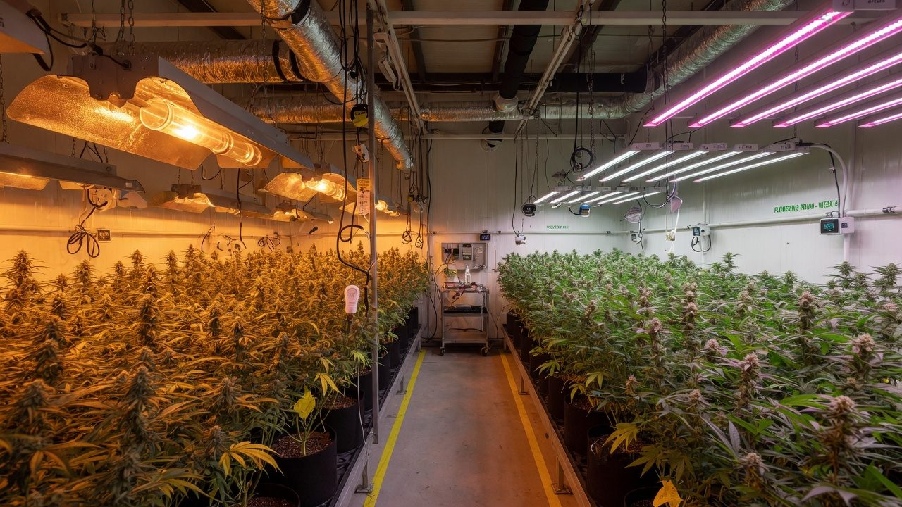
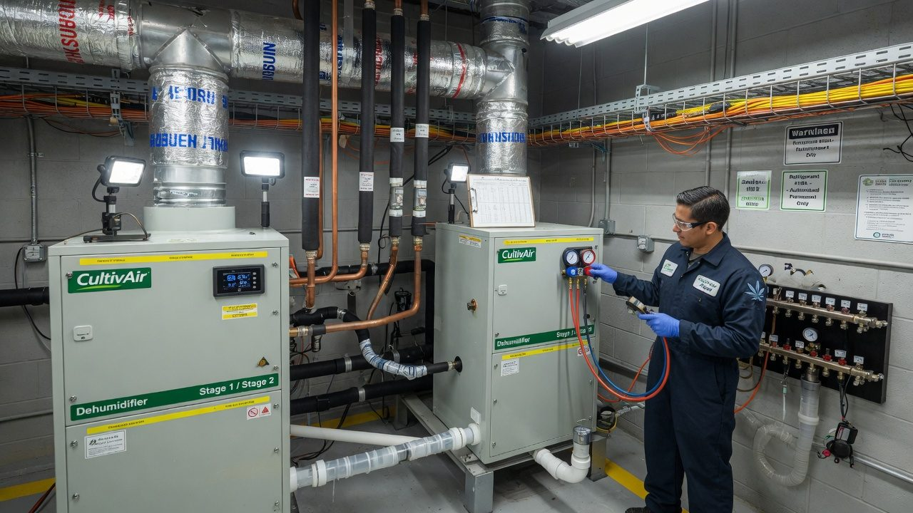
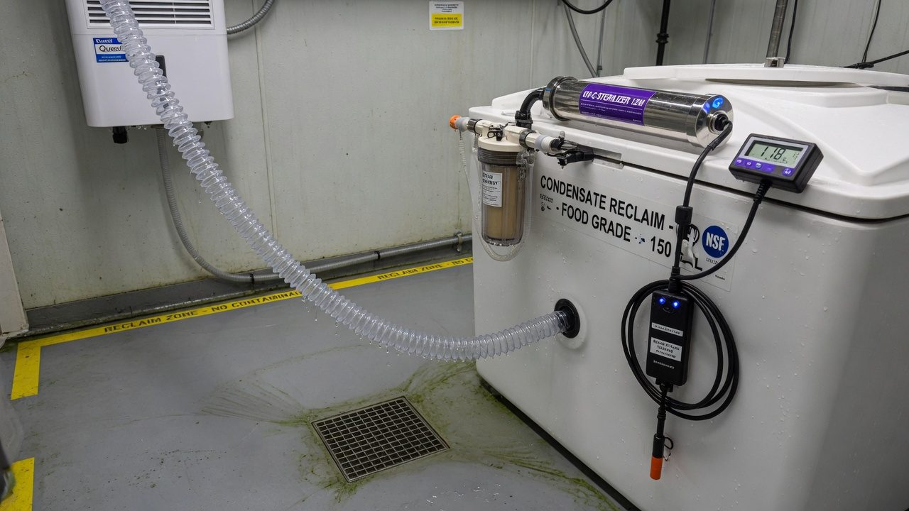
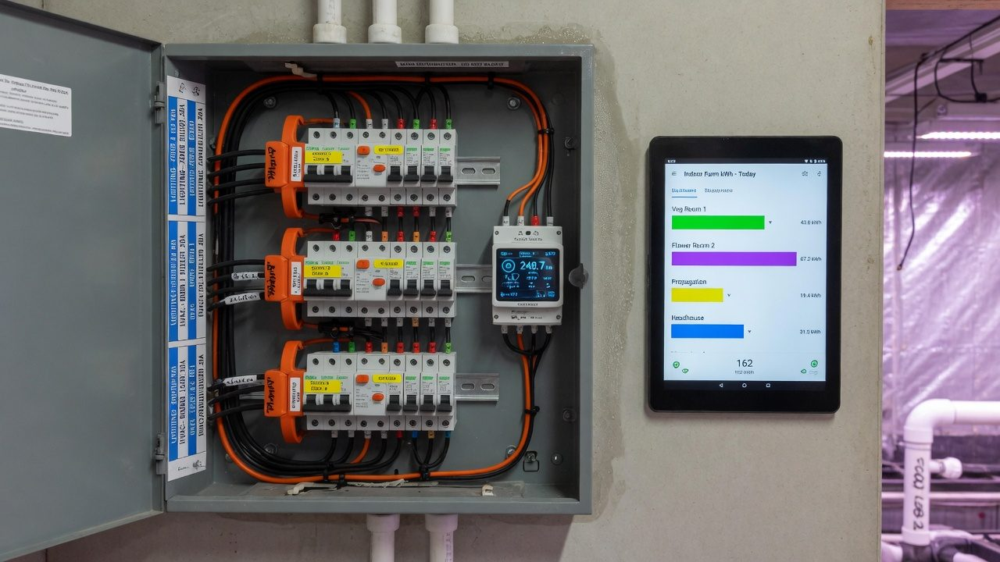

Energy, utilities and sustainability
Where the kilowatt-hours actually go in an indoor grow — lighting, HVAC, dehumidification — and the cited playbook for spending fewer of them: efficacy, the double dividend, demand charges, water reuse, and the retrofit order that pays.
Your power bill is a design choice
Indoor cannabis is one of the most energy-intensive ways humans make anything. Growing one kilogram of flower in a conventional indoor room takes thousands of kilowatt-hours — the classic model puts it around 6,000 kWh, about six units of electricity per gram[1]. At industry scale that added up to roughly 1% of US national electricity use back in 2012, and the 2025 update puts the industry's climate footprint at 44 million tonnes of CO₂e a year — the emissions of about 10 million cars — with a US energy bill near US$11 billion[3].
Here is the part that matters to you: almost none of that intensity is compulsory. The spread between an efficient room and a wasteful one growing the same flower is enormous, and the spread between indoor, greenhouse and outdoor is two orders of magnitude[4]. Energy is typically one of the top operating costs of a cultivation business — estimates run from 20% to as much as 50% of production cost[5] — and unlike rent or wages, you can engineer it down without giving anything up. This paper is the map: where the kilowatt-hours go, what the benchmark studies actually measured, and the order to attack the bill in.
It walks a beginner from reading their own power bill to running a cited efficiency retrofit. You do not need an engineering background — every term is defined on the way through. It pairs with lighting fundamentals (what the photons do), grow-room systems (what the equipment does), and scaling to high light (what happens when you push intensity up).
Accuracy, self-review, and grain-of-salt notes
We've gone to great lengths to keep these guides honest. One of the main ways we do that is self-review: we actively look for claims that are subjective, only lightly backed by literature, or based on grower practice rather than a controlled study — and we call those out instead of dressing them up as settled science.
Often there simply is no paper for the decision you're making. In those cases we're drawing on what other growers report and what has worked in our own rooms. That can still be useful — but it is not a lab proof. Do what works for your plants, your room, and your meters. If a table disagrees with your crop, believe the crop and log the difference.
- Core definitions and measurement units used in the paper
- Safety-critical limits where occupational or standards sources are cited
- Numeric stage targets (light, climate, feed) as starting bands, not laws
- SOPs that work in many rooms but need your genetics and meters
- Any single-number 'guaranteed' yield or potency claim without a multi-site trial
- Controller setpoints copied from another facility without re-calibration
See something glaringly wrong? Tell us and we'll fix it. Please open a GitHub issue with the paper name and what looks off (include a source if you have one): Report an accuracy issue. Local law, labels, and licences always override any recipe here. Inline notes labelled grain of salt flag the highest-risk over-trust points in the text.
Four facts that explain the whole bill
1. Lighting is the biggest single line, climate is the biggest family. In the classic end-use model, lighting takes about a third of total energy, and ventilation, dehumidification and air conditioning together take almost half[1]. A Pacific Northwest utility survey of licensed producers found lighting closer to three quarters of indoor electric load in that mild climate[4]. In greenhouse-gas terms, the big 2021 life-cycle study found HVAC the largest contributor in every US location it modelled, with lights second everywhere[2]. Whichever way you slice it: lights plus climate is 80–90% of the story, everything else is noise.
2. Every lighting watt is paid for twice. Essentially all fixture input power ends up as heat in the room, which your cooling then removes at a cost of roughly one extra watt for every three of heat. Cut lighting power and the cooling bill falls with it — the double dividend (Section 7).
3. You are billed for kW as well as kWh. Commercial tariffs commonly charge for your peak demand (kW) on top of your energy (kWh)[11]. Three flower rooms flipping on at the same second can set a peak that costs you all month, for zero extra yield.
4. You cannot manage what you do not meter. The facilities that benchmark (kWh per square metre of canopy, grams per kWh) are the ones that improve — the benchmarking bodies estimate most growers can cut at least 30% of energy spend with existing measures[10].
Photons are the product; every other kilowatt-hour is cleaning up after the photons — so buy photons more efficiently first, then move the heat and moisture more intelligently, and meter everything so you can prove it worked.
kWh literacy: the vocabulary of the bill
Energy talk collapses into a handful of units. Get these straight and every spec sheet, tariff and benchmark in this paper reads easily.
One more habit: convert everything to the same basis before comparing. US sources quote kWh per square foot and kWh per pound; multiply by 10.8 to get kWh/m² and by 2.2 to get kWh/kg.
Where the kilowatt-hours go, measured
Mills (2012) built the first transparent end-use model of a standard indoor production module and it is still the reference skeleton: lighting about 33% of energy, ventilation and dehumidification 27%, air conditioning 19%, with CO₂ injection, water handling, space heat and drying making up the rest[1][6]. Power density in a flowering room runs near 200 W per square foot — the same order as a data centre[5].
Real facilities scatter around that skeleton. The Northwest Power and Conservation Council surveyed licensed producers in Oregon and Washington and measured indoor operations at about 128 kWh per square foot of canopy per year (≈1,380 kWh/m²) — roughly 100 of it lighting and 28 HVAC and pumping — against 12 for greenhouses and about 1 for outdoor[4]. Mild-climate rooms lean harder on lighting; hot, humid or freezing climates push the HVAC share up. The 2021 national life-cycle study modelled a facility in every US county and found climate control the largest greenhouse-gas contributor in all of them, driven partly by ventilation rates of 12–60 air changes per hour in surveyed grows — versus 0.35 for a house and a 15-ACH minimum for a hospital operating theatre[2].
Mills' 33/27/19 split describes an HPS-era room. Swap to LED and lighting kWh falls ~40% while the plants keep transpiring — so the dehumidifier's share of the bill rises even as the total falls. Post-retrofit, climate is usually your biggest family of load. Plan the HVAC work (Section 8) as the second act of the same project, not a separate one.
kWh per gram: the honest spread
How much electricity does a gram of flower take? The studies disagree — usefully. The spread tells you how much of the number is physics and how much is choices.
| Source | What it measured | Headline number |
|---|---|---|
| Mills 2012 (Energy Policy)[1] | Model of a standard indoor module, US average practice | ≈6,074 kWh/kg; ~13,000 kWh per year per 4'×4'×8' module |
| Summers et al. 2021 (Nature Sustainability)[2] | Modelled facility in every US county, cradle-to-gate | Electricity ≈1,700–5,300 kWh/kg by location; GHG 2,283–5,184 kg CO₂e/kg |
| ACEEE industry review 2017[5] | Trade + utility programme data | ~2,000 kWh/lb (≈4,400 kWh/kg); ~200 W/ft² power density |
| NW Power & Conservation Council[4] | Survey of licensed OR/WA producers | Indoor 128 vs greenhouse 12 vs outdoor 1 kWh/ft²·yr |
| Cannabis PowerScore (RII)[10] | Self-reported facility benchmarking dataset | Tracks kWh/ft² and g/kWh; most facilities can save ≥30% |
To make the units concrete: 4,400 kWh/kg is 4.4 kWh per gram — about the electricity a typical fridge uses in three days, per gram. Flip it into the benchmarking platform's preferred metric and the same number is ~0.23 g/kWh; the 2021 model's best case (~1,700 kWh/kg) is ~0.6 g/kWh. Well-run LED rooms report their progress in exactly these units[10].
These studies draw different lines. Some count electricity only; the 2021 model adds natural gas, upstream materials and CO₂ supply; per-canopy figures ignore veg rooms, drying and offices unless stated. Comparing your metered kWh/g to a study with a different boundary proves nothing. Pick one metric you can measure consistently — total facility kWh per gram of saleable dry flower per cycle is the honest one — and compare yourself to yourself, cycle over cycle.

Efficacy: the most important number you can buy
A grow light's job is photons. Efficacy — photosynthetic photons out per joule of electricity in, written µmol/J — is the number that decides your lighting bill at any given light level. A 1,000 W double-ended HPS delivers about 1.72 µmol/J[7]. By 2020, commercial LED fixtures had reached 2.5–2.8 µmol/J for white+red spectra and 3.0 for blue+red, with practical limits near 3.4 and 4.1 respectively[7]. The DesignLights Consortium's horticultural qualification floor — the minimum to get on the QPL that rebate programmes reference — is 2.5 µmol/J from April 2025, which the DLC notes is more than 45% above the best non-LED option[8].
The arithmetic is worth doing once by hand. Delivering the same photon flux at 3.0 µmol/J instead of 1.72 cuts lighting power by about 43% (1 − 1.72/3.0). That is what the field data shows too: in a benchmarking analysis of 84 indoor facilities, the ones flowering under LED averaged 34% better facility energy efficiency and 80% better production efficiency (grams per unit energy) than double-ended HPS facilities[9], and a documented Oregon HPS→LED retrofit improved grams per kWh by 68%[10].
Two honesty notes. First, efficacy differences within the LED market are now bigger than the brand stories suggest — read the tested µmol/J on the QPL listing, not the marketing page[8]. Second, an LED swap changes the room's physics: less radiant heat means cooler leaf surfaces at the same air temperature, so target air temperature typically rises a degree or two and humidity control gets harder, not easier — the lighting paper covers the plant side; Section 8 covers the machine side.
- Compare fixtures at µmol/J and total µmol/s output, never at watts — watts are the cost, not the product.
- Check the fixture is on the DLC horticultural QPL — that is the tested number, and often the rebate gateway[8].
- Dimmed LEDs usually run slightly more efficiently per photon, so sizing fixtures with headroom and running at 80–90% costs little.
- Efficacy buys you either the same light for less power or more light for the same power — decide which before you buy (see scaling to high light).
Every lighting watt is paid for twice
Here is the physics that makes lighting efficiency the anchor measure. Essentially every watt you feed a fixture ends up as heat in the room — the photons themselves are absorbed by leaves and surfaces and become heat too. While lights are on, your cooling must remove that heat, and a vapour-compression system spends roughly one watt of compressor power per three watts of heat moved (the ACEEE industry analysis assumed 1.2 kW per ton, a COP of about 2.9, with cooling required year-round during lights-on)[5].
Run the numbers over a year and the dividend is most of the payback case. The ACEEE worked example: a flowering fixture stepping from 1,000 W HID to 600 W LED saves about 2,300 kWh a year once avoided cooling is counted (12-hour days), and a veg fixture from 600 W to 300 W saves about 2,600 kWh (18-hour days) — simple paybacks of 2–4 years at US$0.12/kWh, before any rebate[5]. At higher power prices the payback shortens proportionally.
- Winter heating can claw some back. In cold climates, HPS waste heat was doing free heating during lights-on. After an LED swap you may buy some of that heat back — ideally with a heat pump at COP 3, not resistance coils at COP 1.
- The latent load does not shrink. Transpiration is driven by the environment and canopy, not by fixture wattage — your dehumidifier keeps working. Less AC runtime also means less incidental moisture removal on the AC coil, so the dedicated dehu often works harder post-retrofit. Budget for it (Section 8).

Moving heat and water for fewer watts
After lighting, the climate plant is where the remaining kilowatt-hours live[1][2]. You cannot opt out of the work — the room's heat must leave and the transpired water must leave — but the same work can be done at wildly different efficiencies. Four levers, in rough order of leverage:
1. Buy COP and stage it. Higher-COP equipment does the same job for fewer watts, but only if it can run in its happy zone. A single oversized unit short-cycles at part load: it never runs long enough to dehumidify properly, cycles its compressor to death, and wastes energy on every restart. Multiple smaller staged units — or variable-capacity compressors — track the room's actual load, which in a grow swings hugely between lights-on and lights-off. Size for the real post-LED heat load, not the HPS-era one.
2. Reuse heat you already paid for. Dehumidification by sub-cooling needs the cold air reheated to supply temperature; doing that with electric resistance is a COP-1 penalty you pay twice. Hot-gas reheat uses the refrigeration circuit's own rejected heat for free; air-to-air heat-recovery dehumidifiers pre-cool incoming air against the cold outgoing stream — UC Davis testing of such a system measured 30–50% savings over conventional units without recovery[5]. Desiccant systems can likewise be recharged with waste heat where it exists[5].
3. Use free cooling where the climate offers it. When outside air is cooler and drier than the room, an economiser can dump heat for the cost of a fan instead of a compressor. The surveyed industry runs ventilation anywhere from 12 to 60 air changes per hour[2] — sealed CO₂-enriched rooms rightly sit at the low end, but lights-off hours and shoulder seasons still offer free-cooling windows if the controls and filtration are designed for it. The trade-offs (CO₂ loss, humidity ingress, filtration, biosecurity) are covered in airflow design and CO₂ enrichment.
4. Mind the dehumidifier's own efficiency. Dehumidifiers are rated in litres of water removed per kWh; integrated and heat-recovery designs beat fleets of portable domestic units decisively, and drying rooms deserve the same scrutiny as flower rooms. When the lights-off period arrives, the room still transpires for hours — lights-off dehu capacity is a mould-risk control as much as an energy line (see mould risk).
Every controller has a deadband — the gap between 'start cooling' and 'start heating'. Rooms tuned to fight for ±0.3 °C burn energy purely on nervous equipment. Widen deadbands to what the plants actually notice (±1 °C is generous), make sure heating and cooling setpoints can never overlap, and stop the AC and dehu fighting each other — reheat wars between two controllers are a classic silent kWh leak.
kW, kWh, and why lights-on time is a billing decision
Your bill has two different products on it. Energy (kWh) is the total you used. Demand (kW) is the fastest you used it — typically the highest 15- or 30-minute average in the month — and commercial tariffs commonly price it separately. In a US survey, nearly five million commercial customers were on tariffs with demand charges above US$15 per kW-month[11]; at that rate a 190 kW peak costs ~US$2,850 a month before you have paid for a single kWh.
This is the cheapest retrofit in the whole paper: it is a scheduling change. Flower rooms run 12/12 regardless, so staggering their on-times costs no photons, and it also smooths the load on your own transformer, wiring and HVAC plant — the climate system sees one room's worth of step change at a time instead of three. If your veg room runs 18/6, park its 6 dark hours over the flower rooms' overlap window.
Tariff thinking, kept generic. On a flat tariff, only efficiency and demand management matter. On a time-of-use tariff, a kWh at peak can cost several times an off-peak kWh — and a 12/12 room is free to put its entire lights-on block wherever the cheap hours are, typically overnight. Running lights-on through the night also puts your biggest cooling load into the coolest outdoor air, which raises the real-world COP of every unit rejecting heat outside. The costs are human: night-shifted rooms need night checks, and any light-leak discipline problems get harder to spot. Read your actual tariff sheet — fixed charge, energy rates by period, demand charge, power-factor clause — before optimising anything.
| Bill line | What drives it | Your lever |
|---|---|---|
| Fixed / daily charge | Being connected at your capacity class | Right-size your supply; don't pay for capacity headroom you never use |
| Energy (kWh) | Everything in Sections 4–8 | Efficacy, COP, heat recovery, controls |
| Demand (kW) | Worst 15–30 min of the month | Stagger lights-on; soft-start big motors; never let all rooms + dehus + irrigation align |
| Time-of-use spread | When you use, not how much | Put lights-on blocks in cheap windows; pre-cool before peak windows |
| Power factor (if billed) | Reactive load from old magnetic ballasts, motors | Modern LED drivers are near unity; correction capacitors for big motor plant |
Demand-charge and TOU structures vary enormously between utilities and countries — some meter demand only at peak times, some all day, some ratchet your worst month across the year. The strategy above is universal; the arithmetic is not. Model your specific tariff with a spreadsheet and one month of interval data before committing the facility to a night schedule.

The water bill is an energy bill wearing a raincoat
Indoor cannabis is thirsty in a specific, recoverable way. Reported irrigation demand runs around 9–11 litres per plant per day for mature indoor plants in peak season, and about 22.7 L/day for outdoor plants at the height of summer[6] — though per-plant numbers vary so much with pot size, plant size and stage that the benchmarking bodies deliberately measure water per unit of canopy instead[10]. In drain-to-waste systems another 10–30% is pushed through deliberately as runoff to control salts (see the irrigation papers for why).
Here is the part beginners miss: in a sealed room, almost every litre you irrigate ends up in the air, because the plant transpires the overwhelming majority of what it drinks. Your dehumidifier and AC coils then condense it back to liquid — a large flower-room dehumidifier can yield around 270 litres a day, roughly 1,900 litres a week, of near-distilled condensate[13]. That is water you already paid to pump, treat, and then remove from the air at real electrical cost. Sending it down the drain is paying full price for a product and binning it at the door.
Rules of thumb for the loop. Treat condensate before reuse — carbon/sediment filtration plus UV is the common stack, then blend or re-mineralise since near-zero-EC water is aggressive on plumbing and useless as a calcium source[13]. Collect runoff separately: it carries nutrients and root-zone microbes, so it needs proper treatment or disposal, not quiet blending. Keep collection tanks dark, cool and cycled to stop biofilm. And check your local rules first — jurisdictions differ on whether reclaimed condensate may touch a consumable crop, on backflow prevention, and on trade-waste discharge of runoff. Water quality itself (what is in it before nutrients) is covered in source water, RO and alkalinity.
Log your daily condensate volume. It tracks whole-room transpiration, so a sudden drop flags stalled plants, a failed dehu, or an irrigation fault — often a day before anything looks wrong. Facilities instrumented for it treat condensate litres as a crop biosignal, not just reclaimed water.
The carbon story: grid × kWh, and the greenhouse question
Carbon follows the same arithmetic as the bill: kWh consumed × the grid's emissions per kWh. The 2021 national study put cradle-to-gate emissions of indoor production at 2,283–5,184 kg CO₂e per kg of dried flower depending on location (median 3,658), with US grid intensities spanning roughly 245–766 g CO₂e/kWh[2]. Mills' earlier central estimate was 4,600 kg CO₂e/kg — enough that a single joint carried about 1.5 kg of CO₂[1]. The 2025 industry-wide update lands at 44 Mt CO₂e per year, about 1% of total US emissions, with roughly 90% of it attributable to indoor production[3].
For licensed indoor growers the route is usually fixed by regulation, security and quality requirements — so the honest carbon plan is: cut kWh (everything above), then buy cleaner kWh. Grid mix matters enormously: the same room emits several times less in a hydro-heavy region than a coal-heavy one at identical efficiency[2]. On a renewables-heavy grid like New Zealand's — 85.5% renewable electricity in 2024[14] — the carbon per kWh story softens dramatically. The bill does not: every efficiency argument in this paper is written in dollars first, and those survive any grid.
- Claim numbers you metered, in stated units, over a stated boundary — 'we cut facility kWh/g 22% year-on-year' beats 'we're green'.
- Cite grid factors with a source and year; grids change annually[14].
- Never net off purchased offsets against an intensity claim without saying so.
- If you sell into markets with sustainability reporting, per-gram energy and water intensity are the two numbers buyers increasingly ask for[10].
Measure → LED → controls → dehu → envelope
Efficiency projects fail by sequencing, not by technology. The order below exists because each step changes the sizing maths of the next — do them backwards and you buy equipment twice. It also front-loads the cheap wins so the early savings fund the later capital.
- 1Measure first — two weeks minimum of baselineSubmeter lighting, HVAC, dehumidification and 'everything else' separately (Section 13), and log room conditions alongside. You are buying two things: the before-photo that proves every later saving, and the load numbers that size every later purchase. Benchmarking your kWh/ft² and g/kWh against the industry dataset tells you how much headroom you have[10].
- 2LED retrofit — the anchor measureBiggest single lever: ~40% off lighting kWh at equal photons plus the cooling dividend (Sections 6–7), with documented 2–4 year paybacks before rebates[5] and 34–80% efficiency gaps between LED and HPS facilities in the field[9]. Ramp intensity per the acclimation paper — an efficiency project that bleaches a crop pays for nothing.
- 3Controls and deadbands — near-zero capitalStagger lights-on across rooms (Section 9). Widen deadbands, fix fighting setpoints, stage equipment, and relax lights-off targets to what mould risk actually requires rather than flower-time cosmetics. This step routinely finds 5–15% of the bill for the price of commissioning time — and it is where an automation stack earns its keep.
- 4Dehumidification and HVAC upgrade — now sized correctlyWith the LED heat load and staggered schedule known, right-size the climate plant: staged or variable capacity, hot-gas reheat instead of resistance, heat-recovery dehumidification (30–50% savings in testing[5]). This is the step the LED swap quietly made necessary — the latent share grew (Section 7).
- 5Envelope — seal and insulate lastVapour-seal penetrations, insulate against the climate you fight most, fix door discipline and strip-curtain the traffic paths. It is last because it is the slowest payback per dollar in most retrofits — but a leaky envelope quietly taxes every kWh the other four steps saved, and in humid climates infiltration is a permanent latent load on the dehu you just bought.
LED before HVAC, always: relighting cuts the sensible load 30–40%, so HVAC bought first is HVAC bought oversized — and oversized units short-cycle and dehumidify badly forever. The only exception is a failed unit that must be replaced today; even then, size it for the post-LED room you are about to build.

You can't manage what you don't meter
The utility meter tells you one number a month about a building full of separate machines. Everything in this paper becomes manageable the day you split that number: current-transformer (CT) submeters on the lighting circuits, the HVAC plant, the dehumidifiers and the pump/controls remainder cost little per circuit and connect to any modern monitoring or home-automation platform. From there, three habits do the work:
This is also where the honest sustainability numbers come from (Section 11): a metered kWh/g trend, cycle over cycle, is the entire audit trail. Facilities that submitted benchmarking data found on average that at least 30% savings were available with existing measures[10] — but every one of those savings was discovered by a meter, not a hunch.
The six ways energy projects go wrong
These are the recurring wrecks. Every one of them is avoidable at design time and expensive afterwards.
Lighting kWh fell 40%; RH climbed and mould pressure followed. Less sensible heat means the AC runs less, so its coil removes less incidental moisture — while transpiration barely changed. The dedicated dehu was already marginal and now it is the bottleneck. Fix: re-run the latent load maths as part of the LED project, not after the first scare.
Cooling sized for the HPS era (or 'to be safe') now short-cycles: temperature holds but humidity wanders, compressors wear out early, and efficiency dies in the start-stops. Fix: stage multiple smaller units or specify variable capacity; size from measured post-retrofit load, not the old nameplate sum.
An efficiency project cut energy 20% — and the bill barely moved, because all rooms still flip on together and the demand charge holds the total up. Fix: read the tariff, stagger lights-on, and check the interval data actually shows the peak falling (Section 9).
Closing a vented room for CO₂ enrichment ends free moisture dumping — every litre transpired must now be condensed at electrical cost. Done without heat-recovery dehu, the sealing 'saving' quietly becomes a bigger dehu bill. Fix: cost the full sealed-room energy balance before sealing; recover the condensate to claw value back (Section 10).
Free water, straight to the roots — plus dissolved coil metals and a drain-pan biofilm inoculum. Root disease and heavy-metal test failures are how this one surfaces. Fix: filter, sterilise, re-mineralise, verify with a lab test, and check reuse is legal for your licence class[13].
Quoting a flattering kWh/g against a study with a different boundary — electricity-only vs life-cycle, canopy-only vs whole facility — convinces nobody who checks. Fix: define your boundary once, publish it with the number, and compare against your own prior cycles first (Section 5).
Symptom → likely cause → what to check
Energy faults announce themselves on the meter before the crop. Work this table with your interval data open.
| Symptom | Likely cause | Check |
|---|---|---|
| Bill up, yield flat | Equipment degradation: dirty coils, failing dehu, drifting sensors making HVAC overwork | Per-end-use submeter trend vs last cycle; coil condition; calibrate room sensors |
| Demand charge jumped one month | A new coincidence — schedule change aligned rooms, or a big motor now starts during the peak window | 15-min interval data for the peak day; irrigation/dehu/lights-on timing overlap |
| RH creeping up after LED retrofit | Latent load unchanged but AC runtime (and its incidental drying) fell | Dehu duty cycle and L/day removed vs pre-retrofit; add staged dehu capacity |
| Dehu running flat out, room still humid | Undersized after sealing or canopy growth; or short-cycling AC fighting it with reheat | Condensate litres/day vs irrigation litres/day mass balance; setpoint conflict between AC and dehu |
| Lighting kWh 10%+ below normal | Dead drivers or failed bars — a 'saving' that is really lost photons | Per-circuit draw vs commissioning baseline; PPFD spot map under suspect fixtures |
| Power-factor penalty on the bill | Aged magnetic ballasts or big uncorrected motors | Bill's PF line; utility interval data; correction capacitors or driver upgrades |
| Condensate volume suddenly down | Transpiration stalled (irrigation fault, sick crop) or dehu failing — both urgent | Cross-check irrigation logs and substrate sensors; dehu amp draw vs baseline |
Photons are the product; everything else is overhead
Strip the whole subject to one sentence: an indoor grow converts electricity into photons, and then spends more electricity cleaning up the heat and humidity the first spend created. Every kilowatt-hour on your bill is one or the other. That is why efficacy compounds (Section 6), why the double dividend exists (Section 7), and why the retrofit order runs lighting before HVAC (Section 12).
- Meter before you spend. The baseline is the cheapest instrument you will ever buy, and the only proof your project worked[10].
- Buy photons per joule, not watts. Efficacy is the one spec that pays twice — at the driver and at the compressor[7][5].
- Move heat with COP, never resistance. Reheat and winter heat by heat pump or hot gas; resistance is a last resort with a meter on it.
- Schedule the peak away. Staggered lights-on is a free 20–30% off the demand line[11].
- Close the water loop. Condensate is paid-for water and a free crop signal — treat it and use it[13].
- Report your own trend, not someone else's benchmark. kWh per gram, same boundary, every cycle[2].
Set your expectations honestly. You will not reach a greenhouse's numbers in a windowless room — sunlight is a subsidy the building cannot match[4][12]. But the gap between an unmanaged room and a measured, LED-lit, staged, heat-recovering one is the difference between energy as your scariest cost line and energy as a controlled, boring input — the studies put 30%+ of the bill within reach of existing, proven measures[10][5]. Start with the meter.
References
- Mills E (2012). The carbon footprint of indoor Cannabis production. Energy Policy 46:58-67. (End-use split lighting 33% / ventilation+dehumidification 27% / AC 19%; ~6,074 kWh and 4,600 kg CO2e per kg; ~13,000 kWh/yr per 4'x4'x8' module; ~1% of US electricity, ~US$6B/yr.) https://doi.org/10.1016/j.enpol.2012.03.023
- Summers HM, Sproul E, Quinn JC (2021). The greenhouse gas emissions of indoor cannabis production in the United States. Nature Sustainability 4:644-650. (Cradle-to-gate 2,283-5,184 kg CO2e/kg by location, median 3,658; HVAC the largest contributor everywhere, lights second; surveyed ventilation 12-60 ACH; modelled electricity ~1,700-5,300 kWh/kg; US grid intensity ~245-766 g CO2e/kWh.) https://doi.org/10.1038/s41893-021-00691-w
- Mills E (2025). Energy-intensive indoor cultivation drives the cannabis industry's expanding carbon footprint. One Earth 8(2). (Industry-wide ~44 Mt CO2e/yr, ~1% of total US emissions, ~90% from indoor production; ~US$11B annual energy bill; air-change rates ~60x homes.) https://www.cell.com/one-earth/fulltext/S2590-3322(25)00005-3
- Northwest Power and Conservation Council (2018). Electricity consumption from Northwest cannabis production (survey of licensed Oregon and Washington producers, 2017 canopy data). (Annual intensity: indoor ~128, mixed 38, greenhouse 12, outdoor ~1 kWh per ft2 of canopy; lighting ~100 of the indoor 128; OR+WA total ~112 aMW.) (industry/manufacturer or non-journal source) https://www.nwcouncil.org/sites/default/files/cannabisReport.pdf
- Remillard J, Collins N (2017). Trends and observations of energy use in the cannabis industry. ACEEE Summer Study on Energy Efficiency in Industry. (~200 W/ft2 power density; ~2,000 kWh/lb; LED retrofit examples 1,000→600 W flower and 600→300 W veg with ~2,300-2,600 kWh/yr saved incl. cooling at COP ~2.9 and 2-4 yr paybacks; heat-recovery dehumidification 30-50% savings in UC Davis WCEC testing; energy 20-50% of production cost.) https://www.aceee.org/files/proceedings/2017/data/polopoly_fs/1.3687880.1501159058!/fileserver/file/790266/filename/0036_0053_000046.pdf
- Zheng Z, Fiddes K, Yang L (2021). A narrative review on environmental impacts of cannabis cultivation. Journal of Cannabis Research 3:35. (Compiles Mills/NPCC end-use splits; water use ~22.7 L/plant/day outdoor in season and ~2.5-2.8 gal/plant/day indoor at peak.) https://doi.org/10.1186/s42238-021-00090-0
- Kusuma P, Pattison PM, Bugbee B (2020). From physics to fixtures to food: current and potential LED efficacy. Horticulture Research 7:56. (1,000 W DE HPS 1.72 umol/J; 2020 LED fixtures 2.5-2.8 white+red and 3.0 blue+red; practical limits 3.4 and 4.1 umol/J.) https://doi.org/10.1038/s41438-020-0283-7
- DesignLights Consortium (2025). Horticultural technical requirements V4.0 and qualified products list. (Minimum photosynthetic photon efficacy 2.5 umol/J from April 2025 - >45% above 1,000 W DE HPS; V3.0 floor was 2.30 from March 2023, itself 21% above V2.1's 1.90.) (industry/manufacturer or non-journal source) https://designlights.org/our-work/horticultural-lighting/technical-requirements/hort-v4-0/
- Resource Innovation Institute (2022). Study of cannabis energy use: indoor cultivation operations using LED lighting demonstrate better efficiency (84-facility PowerScore analysis: LED-flowering facilities averaged 34% better facility efficiency and 80% better production efficiency than DE HPS facilities). (industry/manufacturer or non-journal source) https://resourceinnovation.org/press-release/study-of-cannabis-energy-use-shows-indoor-cultivation-operations-using-led-lighting-demonstrate-better-efficiency/
- Resource Innovation Institute. Cannabis PowerScore benchmarking platform (facility efficiency kWh/ft2 of flowering canopy and production efficiency g/kWh; documented Oregon HPS→LED retrofit +68% g/kWh; most facilities estimated able to save >=30% of energy spend). (industry/manufacturer or non-journal source) https://resourceinnovation.org/blog/welcome-to-the-cannabis-powerscore-an-energy-benchmarking-tool-for-growers-of-all-types/
- McLaren J, Gagnon P, Anderson K, et al. (2017). Identifying potential markets for behind-the-meter battery energy storage: a survey of U.S. demand charges. NREL / Clean Energy Group. (~5 million of 18M US commercial customers can face demand charges above US$15/kW-month.) (industry/manufacturer or non-journal source) https://www.nrel.gov/news/press/2017/where-commercial-customers-benefit-from-battery-energy-storage.html
- New Frontier Data, Resource Innovation Institute, Scale Microgrid Solutions (2018). The 2018 Cannabis Energy Report. (US legal cultivation ~1.1 TWh/yr with +162% forecast by 2022; electricity-related emissions ~22.7 kg CO2e/kg outdoor and ~326.6 kg CO2e/kg greenhouse.) (industry/manufacturer or non-journal source) https://catalog.resourceinnovation.org/item/the-2018-cannabis-energy-report-407554
- Cannabis Business Times / Desert Aire. A guide to recovering condensate water in cannabis cultivation facilities. (Large flower-room dehumidification can yield ~500 gal (~1,900 L) per week of near-distilled condensate; filter, sterilise and re-mineralise before reuse; watch coil metals and drain-pan biofilm.) (industry/manufacturer or non-journal source) https://www.cannabisbusinesstimes.com/irrigation/news/15687039/a-guide-to-recovering-condensate-water-in-cannabis-cultivation-facilities
- NZ Ministry of Business, Innovation & Employment. Energy in New Zealand (renewable share of electricity generation 85.5% in 2024; 88.1% in 2023). (industry/manufacturer or non-journal source) https://www.mbie.govt.nz/building-and-energy/energy-and-natural-resources/energy-statistics-and-modelling/energy-publications-and-technical-papers/energy-in-new-zealand
Citations marked in-text as [n] map to this list. Primary literature and official guidance except where noted. Cannabis tissue culture is strongly genotype-dependent, verify dilutions, hormone doses and local regulations against the primary sources before relying on them.